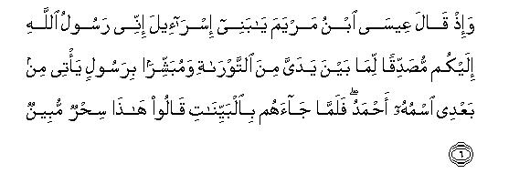
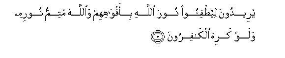
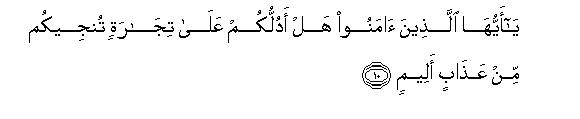

بسم الله الرحمن الرحيم
Sayyid Abul Ala Maududi - Tafhim al-Qur'an - The Meaning of the Qur'an
 61.
Surah As Saff (The Ranks)
61.
Surah As Saff (The Ranks)
The Surah derives its name from the sentence yuqatiluna fi sabil-i- hlsaff-an of verse 4; thereby implying that it is a Surah in which the word saff occurred.
It could not be known from any reliable tradition, but a study of its subject-matter shows that this Surah probably was sent down in the period closely following the Battle of Uhud, for by reading between the lines perceives a clear description of the conditions that prevailed in that period.
Its theme is to exhort the Muslims to adopt sincerity in Faith and to struggle with their lives in the cause of Allah. It is addressed to the Muslims with weak faith as well as those who had entered Islam with a false profession of the Faith and also those who were sincere in their profession. Some verses are addressed to the first two groups, some only to the hypocrites, and some only to the sincere Muslims. The style itself shows where one particular group has been addressed and where the other.
At the outset the believers have been warned to the effect; "Allah indeed hates those people who say one thing and do another, and He indeed loves. those who fight in the cause of the Truth, standing like a solid structure, against the enemies of Allah."'
In vv. 5-7 the people of the Holy Prophet's community have been warned that their attitude towards their Messenger and their Religion should not be like the attitude that the Israelites had adopted towards the Prophets Moses and Jesus (peace be upon them). In spite of acknowledging the Prophet Moses as a Messenger of God they continued to malign him as long as he lived, and in spite of witnessing clear signs from the Prophet Jesus they denied him without any hesitation. Consequently, the Israelites became perverse, incapable of benefiting from divine guidance. This is certainly not an enviable state which another nation should imitate.
Then, in vv. 8-9 a proclamation has been made with the challenge:"The Jews and the Christians, and the hypocrites, who are conspiring with them, may try however hard they may to extinguish this Light of Allah, it will shine forth and spread in the world in all its fullness, and the Religion brought by the true Messenger of Allah shall prevail over every other religion however hateful it may be to the pagans and polytheists.
In vv. 10-13, the believers have been told that the way to success both here and in the Hereafter is only one: that they should believe in Allah and His Messenger sincerely and should exert their utmost in Allah's Way with their selves and their wealth. As a reward for this they will earn immunity from Allah's punishment, forgiveness of their sins and the eternal Paradise in the Hereafter, and will be blessed with Allah's good pleasure, succor and victory in the world.
In conclusion, the believers have been exhorted to' the effect that just as the disciples of the Prophet Jesus had helped him in the cause of Allah, so should they also become "helpers of Allah", so that they too are blessed with the same kind of good pleasure and approval of Allah as had been the believers before them against the disbelievers.

In the name of Allah, the Compassionate, the Merciful.
[1] Whatever is in the heavens and the earth has glorified Allah, and He is the All-Mighty, the All-Wise.1
[2-4] O you who have believed, why do you say that which you do not do? Most hateful it is in the sight of Allah that you should say that which you do not do.2 Allah indeed loves those who fight in His Way in ranks as though they were a solid wall.3
[5] And remember what Moses had said to his people: "O my people, why do you hurt me even though you know full well that I am indeed a messenger sent to you by Allah?"4 So, when they adopted perverseness, Allah caused their hearts to become perverse: Allah does not guide the transgressors.5

[6] And remember6 what Jesus, son of Mary, had said: "O children of Israel, I am indeed a Messenger sent to you by Allah, confirming the Torah which has come before me7 and giving the good news of a Messenger who shall come after me, whose name shall be Ahmad."8


[7-9] Yet when he came to then with clear Signs, they said, "This is plain magic."9 Now, who could be more wicked than he who forges falsehoods against Allah 10 even though he is being invited towards Islam (submission to Allah)?11 Allah does not guide such wrongdoers. They seek to blow out Allah's Light with their mouths, but Allah has decreed that He shall perfect His Light, much as the disbelievers may dislike it.12 He it is Who has sent His Messenger with the Guidance and the Religion of truth that He may cause it to prevail over all religions, much as the polytheists may dislike it.13

[10-13] O you who have believed, shall I tell you of a bargain14 that will save you from a painful torment? It is that you should believe in Allah and His Messenger,15 and should exert your utmost in Allah's Way with your wealth and your selves. This would be best for you if you only knew.16 Allah will forgive you your sins and admit you into Gardens underneath which canals flow, and will give you excellent abodes in Gardens of Eternity. This indeed is the supreme success.17 And He will give you the other thing too, that you desire. Allah's succor and victory near at hand!18 Give to the believers, O Prophet, the good news of this.

[14] O you who have believed! Be helpers of Allah even as Jesus, son of Mary, had said to the disciples,19 "Who will be my helpers (in calling) towards Allah?" and the disciples had answered,"We are helpers of Allah."20 Then, some of the children of Israel believed and others disbelieved. So We aided the believers against their enemies, and they alone became triumphant.21
1This is a brief introduction to this discourse. For its explanation, see E.N.'s 1,2 of Surah Al-Hadid. The discourse has been opened with this introduction so that before hearing or reading what is going to follow, one may well understand that Allah is free from and far above this that the functioning of His Godhead should depend on someone s faith and another one's help and sacrifices. If He exhorts the believers to adopt sincerity in Faith and urges them to exert their utmost for the success and victory of the Truth, that is for the sake of their own good; otherwise the will of Allah is accomplished by His own power and by His own design, whether somebody makes no effort at all towards its implementation, and whether the whole world joins together to frustrate and resist it stubbornly.
2One meaning of this passage is general as is apparent from its words. It has a special meaning also, which becomes evident when this verse is read along with the verse that follows. The first meaning is that there should be complete agreement between a true Muslim's word and deed: he should carry into effect whatever he says, and when he has no intention of doing it, or has no power for it, he should not say it. To say one thing and do another is one of the most hideous characteristics of man, in the sight of Allah. The Holy Prophet (upon whom be Allah's peace) has explained that a person's being characterized by this quality is a sign that he is not a believer but a hypocrite. According to a .Hadith he said;
"The hypocrite has three signs even if he offered the Prayer and observed the Fast, and professed to be a Muslim: That then he spoke he lied; when he made a promise, he broke it; and when he was entrusted with something, he proved dishonest. " (Bukhari, Muslim) .
In another Hadith he said:
"Four characteristics are such that the one who has all the four, is a hypocrite through and through, and the one who has one of these, has one characteristic of hypocrisy in him until he gives it up: that when he is entrusted with something, he proves dishonest; when he speaks, he lies; when he makes a promise, he breaks it; and when he quarrels he crosses all limits of morality and decency." (Bukhari, Muslim).
The jurists of Islam have almost unanimously held the view that if a person makes a pledge to Allah (e.g.. vows to do some thing), or enters an agreement with others, or promised somebody to do something, it is obligatory for him to fulfil it, unless the thing he has promised is by itself sinful. If it is sinful, he should not observe or carry out the agreement or promise, but should expiate its violation as mentioned in Surah AI-Ma'idah: 89 above. (AI-Jassas and Ibn al'Arabi, Ahkam al-Qur-an an).
This much for the general meaning of these verses. As for their special meaning, it becomes obvious when these are read along with the verse that follows. The object is to reprove those people who talked much and made tall promises to fight and lay down their lives in the cause of Islam, but when the time came of their test and trial, they fled the battlefield. The people of weak faith have been taken to task for this weakness at several places in the Qur'an. For instance, in Surah An-Nisa': 77, it has been said: "Have you also marked those to whom if was said, 'Withhold your hands (a while from war) and establish the salat and pay the zakat. Now that they have been commanded to fight, some of them fear the people as they should fear Allah, or even more than that. They say: 'Our Lord, why have You prescribed fighting for us? Why have You not given us further respite?" And in Surah Muhammad: 20: "Those who have believed, were saying, 'Why is not a Surah sent down (to enjoin fighting)?' But when a decisive Surah was sent down in which fighting had been mentioned, you saw those in whose hearts was a disease, looking towards you like the one under the shadow of death.' On the occasion of the Battle of Uhud in particular, the weaknesses to which allusions have been made continuously from verse 121 to verse 171 of Surah Al-'Imran became all the more conspicuous and visible.
The commentators while explaining the background of the revelation of these verses have mentioned the different forms of the weaknesses to which exception has been taken here. Ibn 'Abbas says that before the fighting was proscribed, there were some people among the Muslims who said: "Would that we could know the act that is most lovable in the sight of Allah, so that we would perform the same." But when they were told that it was fighting in the cause of Allah, it became most difficult for them to carry out their promise. Muqatil bin Hayyan has stated that in the Battle of Uhud these very people were put to the test, and they abandoned the Holy Prophet (upon whom be Allah's peace) and fled Ibn Zaid says that many of the people made the Holy Prophet (upon whom be peace) believe that they would go out with him to fact the enemy whenever it was so required, but when the time of the test came their promises proved false. Qatadah and Dahhak say that if some people did take pan in the battle, they accomplished nothing. but on their return from the battlefield they boasted and bragged, saying. "We put up a brave fight and we achieved such and such a victory." It is such people who have been rebuked by Allah in these verses.
3First, it shows that only those believers are blessed with Allah's good pleasure and approval, who are prepared to fight in His way, disregarding every kind of danger. Secondly, that Allah likes an army which has three characteristics: (1) It fights in Allah's way with full understanding, and does not fight for a cause disapproved by Allah; (2) it is not indisciplined, but is well-organized and well-arrayed for battle; and (3) it offers stiff resistance to the enemy as though it were "a solid cemented structure" . Then, this last quality is by itself highly meaningful. No army can stand in the battle array like a "solid structure unless it has the following characteristics.
(1) Complete agreement in the faith and the objective, which should smite soldiers and officers in a well-knit body.
(2) Confidence in one another sincerity, which cannot be created unless everybody is genuinely sincere in his aim and free from impure motives; otherwise the severe test of war will not allow anyone's insincerity to remain hidden, and whcn confidence is lost, the members of the army start suspecting instead of trusting one another.
(3) A high standard of morality without which neither can the officers and soldiers of the army have love and respect for each other, nor can they remain immune foam mutual clashes and conflicts.
(4) Love of the common objective and a firm resolve to achieve it, which should inspire, the whole army with an invincible spirit of gallantry, devotion and self sacrifice, so that it may actually face the enemy like a solid cemented structure in the battle field.
Such were the foundations on which a powerful military organization was raised under the leadership of the Holy Prophet upon whom be Allah's peace and blessings). Mighty power of the day clashed with it and were annihilated; no power of the world then could dare face it for centuries.
4At several places in the Qur'an details have been given of how the Israelites in spite of acknowledging the Prophet Moses as a Prophet of God and their own benefactor maligned him and proved disloyal to him. For this see Al Baqarah: 51,55,60, 67-71 An-Nisa': 153; AI-Ma'idah: 20-26; AI-A'raf: 138-141; 148-151; Ta Ha: 86-98. In the Bible too, the Jewish history written by the Jews themselves is replete with such events; for instance, sec Exodus, 5: 20-21, 14: 11- 12, 16: 2-3, 17: 3-4; Numbers, 11: 1-15, 14: 1-10, ch.l6, 20: 1-5. Here, allusion to these events is meant to warn the Muslims that they should not adopt the same attitude towards their Prophet as the Israelites had adopted towards their Prophet: otherwise they would meet the same fate as was met by the Israelites.
5That is, it is not Allah's way to force the people to follow the right way of guidance if they are bent upon following the crooked ways of sin and disobedience. From this it automatically follows that the deviation of a person or nation is not initiated by Allah but by the person or the nation itself. But the law of Allah is that He provides means of deviation only for the one who chooses deviation, so that be may go astray into whatever alleys he may like. Allah has granted man the freedom of choice. Now it is for every man and for every group of men to decide whether he or it wants to obey their Lord, or not, and whether he or it chooses the right way for it or one of the crooked ways. There is no compulsion from Allah in this choice. If somebody chooses the way of obedience and guidance, Allah does not push him forcibly towards deviation and disobedience; and if somebody is resolved to follow disobedience instead of the way of righteousness, it is not Allah's way to make him adopt the way of obedience and guidance forcibly. But this also is the truth that the person who chooses a particular way for himself, cannot follow it practically unless Allah provides for him the ways and means and creates for him the conditions which are necessary for following it. This is Allah's grace and favor" without which no one's efforts can be meaningful and productive. Now, if a person is not at all interested in seeking Allah's grace for righteousness, but seeks His grace for adopting evil, he is given the same. And when he receives the grace for doing evil. he becomes temperamentally perverse accordingly and the course of his action and effort goes on becoming crooked until at last the capability to do and accept good in him is gradually lost and destroyed. This is what is meant by, when they adopted perverseness, Allah caused their hearts to become perverse." In this state it is against the law of Allah that the one who wants to adopt deviation, and is actively and earnestly engaged in seeking it, and is expending all one's thought and energy to move further and further on towards it, should be forcibly turned towards guidance, for such an action would negate the object of the test and .trial, for which man has been granted the freedom of choice in the world. For if a man adopts righteousness through such guidance, there is no reason why he should be entitled to any reward whatever. Rather in such a case, the one who was not guided forcibly and was left in deviation on that account, should not be subjected to any punishment, for the responsibility for his deviation would lie on Allah, and at the time of his accountability in the Hereafter, he could present the argument: '`When there existed the rule of granting guidance forcibly in the world, why was I deprived of that favor?" This is the meaning of the words: "Allah does not guide the transgressors." That is, Allah does not grant the favor of adopting the way of obedience to those, who have chosen the way of sin and disobedience for themselves of their own free will.
6This relates to the second disobedience of the children of Israel. The first disobedience they committed in the beginning of their great era of power and prosperity, and this second towards the very end of it, after which they came under the wrath and curse of God for ever and ever. The object of relating these two events here is to warn the Muslims of the consequences of adopting the attitude of disobedience towards their Prophet as the Israelites had adopted towards their Prophet.
7This sentence has three meanings and all three are correct:
(1) "That I have not brought any new religion, but the same religion that the Prophet Moses (peace be upon him) had brought. I have not come to repudiate the Torah, but to confirm it just as the Messengers of God have always been confirming the Messengers who came before them. Therefore, there is no reason why you should hesitate to acknowledge my apostleship. "
(2) "I answer to the good news that is there in the Torah about my advent. Therefore, instead of opposing me you should receive, and welcome me as the one whose coming had been foretold by the former Prophets."
(3) The Third meaning becomes obvious when the sentence is read along with the sentence which follows it and it is this: "I confirm the good news given by the Torah about the coming of Allah's Messenger, named Ahmad (upon whom be Allah's peace and blessings), and give the good news of his coming myself." According to this third meaning. this saying of the Prophet Jesus (peace be on him) alludes to the good news which the Prophet Moses (peace be on him) had given to his people about the advent of the Holy Messenger of Allah (upon whom be Allah's peace). In it he says:
"The Lord thy God will raise up unto thee a Prophet from the midst of thee, of thy brethren, like unto me; unto him ye shall hearken. According to all that thou desiredst of the Lord thy God in Horeb in the day of the assembly, saying, Let me not hear again the voice of the Lord my God, neither let me see this great fire any more, that I die not. And the Lord said unto me, They have well spoken that which they have spoken- I will raise them up a Prophet from among their brethren, like unto thee, and will put my words in his mouth; and he shall speak unto them all that I shall command him. And it shall come to pass, that whosoever will not hearken unto my words which he shall speak in my name, I will require it of him." (Deut. 18: 15-19).
This is an express prophecy of the Torah, which applies to none but the Holy Prophet Muhammad (upon whom be Allah's peace and blessings). In it the Prophet Moses is conveying to his people this direction of Allah: "I will raise up for you a Prophet from among your brethren". Obviously, the "brethren" of a nation cannot be a tribe or a family of the nation itself, but another nation to which it is related racially. If it had implied the coming of a Prophet from among the children of Israel themselves, the words would have been to the effect: ¦I shall raise up a Prophet for you from among yourselves." Hence, the "brethren of the Israelites' can inevitably imply the Ishmaelites, who are their relatives by lineage, being the children of the Prophet Abraham (peace be on him). Moreover, no Israelite Prophet can correspond to this prophecy for the reason also that not one but many Prophets appeared among the Israelites after the prophet Moses and the Bible is replete with their history.
The other thing foretold in the prophecy is that the Prophet to be raised up would be `like into the Prophet Moses". This obviously does not imply that he would resemble the Prophet Moses in physical features or circumstances of life, for in this respect no individual can ever be like another individual; it also does not mean the resemblance in the characteristics of Prophethood, for this characteristic is common to all those _Prophets, who came after the Prophet Moses. Therefore. no Prophet can have this quality that he should be like unto him in this characteristic Thus, resemblance in these two aspects becomes out of the question. The only aspect of resemblance on the basis of which the peculiarity of a Prophet of the future becomes understandable is that that Prophet should be a bearer of Divine Law like the Prophet Moses. And this peculiarity is found in none but the Prophet Muhammad (upon whom be Allah's peace and blessings), for all the Prophets who appeared before him among the Israelites were the followers of the Law of Moses; none of them had brought a permanent Divine Law of his own.
This interpretation is further strengthened by these words of the prophecy. 'According to all that thou (i.e. the Israelites) desiredst of the Lord thy God in Horeb in the day of the assembly, saying, Let me not hear again the voice of the Lord thy God, neither let me see this great fire any more, that I die not. And the Lord said unto them, They have well spoken that which they have spoken. I will raise them up a Prophet from among their brethren, like unto thee, and will put my words in his mouth." In this passage Horeb means the mountain on which the Prophet Moses had received the Divine Law first of all, and the prayer that the Israelites made was: "If we are given a Divine Law in the further, it should not be given us under the dreadful conditions like those which were created at the foot of Mt. Horeb while giving us the Law." These conditions have been mentioned both in the Qur'an and in the Bible. (See Al-Baqarah: 55, 56, 63; AI-A'raf: 155, 171. Bible: Exodus, 19: 17- 18). In answer to it, the Prophet Moses tells the Israelites; 'Allah has granted your prayer. Ho says that He will raise up a Prophet for you, in whose mouth He will put His own words." That is, at the time of bestowing the Dew Divine Law, He will not create the dreadful conditions which were created at the foot of Mt. Horeb. Instead of that, Divine Words will be put in the mouth of the Prophet who would be appointed to that office, ant he will recite those Words before the people. A study of this explanation leaves no room for the doubt that the prophecy applies to another than the Prophet Muhammad (upon whom be Allah's peace). Only he after the Prophet Moses has been granted an enduring and permanent Divine Law. At its bestowal no assembly of the people was called as was called of the Israelites at the foot of Mt. Horeb, and no such conditions were created during the) time it was bestowed as were created in their case there.
8This is a very important verse of the Qur'an, which has been subjected to severe adverse criticism as well as treated with the worst kind of criminal dishonesty by the opponents of Islam, for it says that the Prophet Jesus (peace be on him) had given the good news of the coming of the Holy Prophet Muhammad (upon whom be Allah's peace and blessings) by name. Therefore, it is necessary that we study and discuss it in some detail.
(1) In this Verse the name mentioned of the Holy Prophet (on whom be peace) is Ahmad. Ahmad has two meanings: the one who gives the highest praise to Allah, and the one who is most highly praised by others, or the one who is most worthy of praise among men. Authentic traditions confirm that this too was a well known name of the Holy Prophet (upon whom be peace). Muslim and Abu Da'ud Tayalisi have related on the authority of Hadrat Abu Musa al-Ash'ari that the Holy Prophet said: "I am Muhammad, I am Ahmad, and I am the Assembler. .. " Other traditions on the subject have been related by Imam Malik, Bukhari, Muslim, Darimi, Tirmidhi, and Nasa'i from Hadrat Jubair bin Mut'im, This name of the Holy Prophet was well known among the Companions as is borne out by the poetry of Hadrat Hassan bin Thabit.
It is also confirmed by history that the sacred name of the Holy Prophet was not only Muhammad but also Ahmad. Arabic literature bears evidence that nobody in Arabia had been named Ahmad before the Holy Prophet, and after him innumerable people have been named Ahmad in the world. This is the greatest proof that since his Prophethood this name has been most well known among the people of his community. Had it not been a name of the Holy Prophet, to which Ahmad's slavery did the parents, who named their children 'Ghulam Ahmad", assign them?
(2) The Gospel of St. John bears evidence that at the advent of the Prophet Jesus Christ, the Israelites were awaiting the appearance of three persons: of the Christ, of Elias (i.e. the second coming of the Prophet Elias) and of 'that prophet".
In the words of the Gospel:
"And this is the record of John (the Prophet John: Yahya) when the Jews sent priests and Levites from Jerusalem to ask him, Who art thou? And ho confessed, and denied not; but confessed, I am not the Christ. And they asked him What then? Art thou Elias? And be saith, I am not. Art thou that prophet? And he answered, No. Then said they unto him, Who art thou? that we may give an answer to them that sent us. What sayest thou of thyself? He said, I am the voice of one crying in the wilderness! Make straight the way of the Lord as said the prophet Esaias. And they which were sent were of the Pharisees. And they asked him, and said unto him, Why baptize thou then, if thou be not that Christ, nor Elias, neither that prophet?" (John, 1: 19-25)
These words expressly show that the Israelites were awaiting another Prophet besides the Prophet Christ and the Prophet Elias, and he was not the Prophet John. The belief about the coming of that Prophet was so well known and well established among the Israelites that a mere reference to him as "that prophet" was enough to call attention to him without any need to add: "The one who has been foretold in the Torah. " Furthermore, it also shows that the advent of the prophet to whom they were referring was absolutely confirmed, for when these questions were asked of the Prophet John, he did not say that no other prophet was to come and therefore the questions were irrelevant.
Consider now the predictions that have been cited in the Gospel of St. John from chapter 14 to chapter 16 continuously:
'And I will pray the Father, and he shall give you another Comforter, that he may abide with you for ever; Even the Spirit of truth; whom the world cannot receive, because it sees him not, neither knows him: but ye know him; for he dwells with you, and shall be in you. " (14: 16-17)
'These things have I spoken unto you, being yet present with you. But the Comforter, which is the Holy Ghost, whom the Father will send in my name, he shall teach you all things, and bring all things to your remembrance, whatsoever I have said unto you. " (14: 25-26)
'Hereafter I will not talk much with you: for the prince of this world cometh, and hath nothing in me. " (14: 30)
"But when the Comforter is come, whom I will send unto you from the Father, even the Spirit of truth, which proceeds from the Father, he shall testify of me." (15: 26)
"Nevertheless I tell you the truth: It is expedient for you that I go away: for if I go not away, the Comforter will not come unto you; but if I depart, I will send him unto you. " (16: 7)
"I have yet many things to say unto you, but you cannot bear them now. Howbeit when he, the Spirit of truth, is come, he will guide you into all truth: for he shall not speak of himself; but whatsoever he shall hear, that shall he speak: and he will show you things to come. He shall glorify me: for he shall receive of mine, and shall show it unto you. AII things that the Father hath are mine: ' therefore said I, that he shall take of mine, and shall show it unto you. " (16: 12 15)
(4) In order to determine the exact meaning of these passages one should first know that the language spoken by the Prophet Jesus and his contemporary Palestinians was a dialect of the Aramaic language, called Syriac. More than 200 years before the birth of Jesus when the Seleucides came to power Hebrew bad become extinct in this territory and been replaced by Syriac. Although under the influence of the Seleucide and then the Roman empires, Grace also had reached this area, it remained confined only to that class of the people, who after having access to the higher government circles, or in order to seek access to them, had become deeply Hellenized. The Common Palestinians used a particular dialect of Syriac, the accents and pronunciations and idioms of which were different from the Syriac spoken in and around Damascus. The common people of the country were wholly unaware of Greek. So much so that when in A.D. 70 the Roman Genera( Titus, after taking Jerusalem, addressed the citizens in Greek, he had to be translated into Syriac, This makes it evident that whatever the Prophet Jesus spoke to his disciples must necessarily be only in Syriac.
Secondly, one should know that all the four Gospels contained In the Bible were written by the reek-speaking Christians, who had entered Christianity after the Prophet Jesus. The traditions of the sayings and acts of the Prophet Jesus reached them through the Syriac speaking Christians not in the written form but as oral traditions, and they translated these Syriac traditions into their own language and incorporated them in their books. None of the extant Gospels was written before 70; the Gospel of St. John was compiled n century after the Prophet Jesus probably in Ephesus, a city in Asia Minor. Moreover, no original copy even of these Gospels in Greek, in which these were originally written, exists. None of the Greek manuscripts that have been discovered and collected from here and there and which all belong to the period before the inventions of printing dates before the 4th century. Therefore, it is difficult to say what changes might have taken place in these during the first three centuries What makes it particularly doubtful is that the Christians have been regarding it as quite lawful to romper with their Gospels intentionally as and when they liked. The author of the article "Bible" in Encyclopedia Britannica (Ed. 19731 writes:
“The main source of the evidence and of the variations are the manuscripts of the N.T., dating from the and to the 10th century or even later. In the process of copying, these manuscripts underwent the revisions that necessitate textual criticism. Some of these revisions were unintentional, as the scribe skipped a word or a line or as he mistook one character for another. Other revisions came from the desire of the scribe to harmonize the text of one Gospel with another or of one Testament with the other; or from his pious wish to "correct" or clarify the text at another point. But now that variations in the text exist, collection of the manuscripts is a difficult task."
Under such conditions as these, it is very difficult to say with absolute certainty that the sayings of the Prophet Jesus (peace be on him) found in the Gospels, have been preserved, reproduced and cited faithfully and accurately, and that no change has taken place anywhere.
The third and a very vital point is that even after the conquest by the Muslims, for about three centuries, the Palestine Christians retained Syriac, which was not replaced by Arabic until the 9th century A.D. The information that the Muslim scholars of the first three centuries obtained through the Syriac speaking Christians about the Christian traditions, should be more authentic and reliable than the information of those people whom it reached through translation after translation from Syriac into Greek and then from Greek into Latin. For there were greater chances of the original Syriac words spoken by the Prophet Jesus remaining preserved with the Palestinian Christians than with others.
(5) Keeping these un-deniable historical facts in mind let us consider the fact that in the passages cited from St. John's Gospel above, the Prophet Jesus (peace be on him) is giving the news about one coming after him, about whom he says: "He will be `the prince of this world' (Sarwar `Alam) "he shall abide with you for ever," "he will guide you into all truth," and “he shall testify of me" (i.e. of Jesus himself). By interpolating words like "the Holy Ghost" and "the Spirit of truth", `in the passages of St. John. every effort hag been made to corrupt the real meaning, but despite that if these passages are read carefully, one can clearly see that the one whose coming has been foretold, will not be a spirit but a man, and an extraordinary man, whose teaching will be universal, all pervasive and enduring till the Last Day. For this particular person the word 'Madadgar" (helper) has been used in the Urdu translation, and the Greek word used in St John's original Gospel, according to the Christians, was Peracletus. But the Christian scholars themselves have been faced with great difficulties in determining its meaning. In the original Greek Paraclete has several meanings: to call to a particular place, to call for help, to warn, to tempt and incite, to implore and pray. Moreover, in Hellenic sense, it gives these meanings: to console, to give satisfaction, to encourage. Wherever this word has been used in the Bible, it does pot fit in well with the context anywhere. Origen has translated it Consolateor at some places and Deprecator at others. But the other commentators have rejected both these translations, for in the first place these are not correct according to Greek grammar; second, these meanings do not go well with context wherever this word has occurred in the passages. Some other translators have translated it Teacher, but this meaning too, cannot be derived from the Greek usage, Tertullian and Augustine have preferred the word Advocate, and some other scholars have adopted words like Assistant, Comforter, Cosoler, etc. (See Cyclopaedia of Biblical Literature under "Peracletus").
(6) Now, it is interesting to note that in Greek itself there is another word periclytos, which means "the Praised One". This word is exactly synonymous with `Muhammad". In pronunciation it closely resembles Peracletus. It cannot be a remote possibility that the Christians who have been used to making alterations in their religious books as and when they liked, might have effected e little variation in the spelling of this word in the prophecy related by St. John when they saw that it went against their set belief and creed. The original Greek Gospel composed by St. John does not exist either; therefore it is not possible to check which of the two words had actually been used in it.
(7) But the decision is not solely dependent on this as to which word had St. John actually used in Greek, for in any case that too was, a translation and the Prophet Jesus language, as we have explained above, was Palestinian Syriac. Therefore, the word that he might have used in his good news must necessarily be a Syriac word. Fortunately, we find that original Syriac word in the Life of Muhammad by Ibn Hisham. Along with that we also come to know its synonymous Greek word from the same book. Ibn Hisham, on the authority of Ibn Ishaq, has reproduced the complete translation of 15: 23-27 and of 16:1 of the Gospel according to yuhannus (Yuhanna: John), and has used the Syriac word Munhamanna instead of the Greek Paraclete. Then, Ibn Ishaq or Ibn Hisham has explained it this: The Munhamanna in Syriac means Muhammad and in Greek the Peracletus. (Ibn Hisham, vol. 1, p. 248).
Now, historically, the Historical of the common Palestinian Christians until the 9th century A.D. was Syriac. This land was included in the Islamic territories in the first half of the 7th century. Ibn Ishaq died in 768 A.D. and Ibn Hisham in 828 A.D. This means that in the time of both the Palestinian Christians spoke Syriac, and for neither it was difficult to have contacts with the Christian subjects of their country. Moreover, in those days there also lived hundreds of thousands of Greek speaking Christians in the Islamic territories. Therefore, It was also not difficult for them to find out which particular word of Greek was synonymous with a certain word of Syriac. Now, if in the translation reproduced by Ibn Ishaq the Syriac word Munhamanna has been used, and Ibn Ishaq or Ibn Hisham has explained that its Arabic equivalent is Muhammad and Greek Peracletus, there remains no room for the doubt that the Prophet Jesus had given the good news of the coming of the Holy Prophet himself by name. Along with that it also becomes known that in the Greek Gospel of John the word actually used was Periclytos. which the Christian scholars changed into Peracletus at some later time.
(8) Even an older historical evidence in this connection is the following tradition from Hadrat 'Abdullah bin Mas'ud:
'When the Negus summoned the Emigrants from Makkah to his court and heard the teachings of the Holy Prophet (upon whom be Allah's peace) from Hadrat Ja'far bin Abi Talib, he said; “God bless you and him from whom you have come! I bear witness that he is Messenger of Allah, and he is the same one whose mention we find in the Gospel, and the same one good news about whom had been given by Jesus son of Mary.” (Musnad Ahmad This has been related in Hadih from Hadrat Ja'far himself and also from Hadrat Umm Salamah. This not only proves that in the beginning of the 7th century the Negus knew that the Prophet Jesus had foretold the coming of a Prophet, but also that a clear pointer to 'that prophet" existed in the Gospel on the basis of which the Negus did not take long to from the opinion that the Prophet Muhammad (upon whom be Allah's peace and blessings) was that prophet. However, from this tradition one cannot know whether the source of information with the Negus about the good news given by the Prophet Jesus was this same Gospel of St. John, or whether there existed some other means also at that time for this information.
(9) The truth is that the four Gospels which the Christian Church has recognized as Canonical are neither an authentic means of knowing the Prophet Jesus Prophecies about the Holy Prophet nor are they a reliable source for knowing the correct biography and the original teachings of the Prophet Jesus himself, but by far the more trust-worthy means for this is the Gospel of Barnabas which the Church has declared as heretical and apocryphal. The Christians have done whatever they could to conceal it, and it remained lost to the world for centuries. In the 16th century only one copy of its Italian translation existed in the library of Pope Sixtus V, and no one was allowed to read it. In the beginning of the 18th century it came into the hands of one John Toland. Then, changing different hands it found its way in 1738 into the Imperial Library of Vienna, In 1907 an English translation of this Italian manuscript was printed at the Clarendon Press, Oxford, but probably soon after its printing the Christian world realized that the book cut at the very root of the Faith which was attributed to the Prophet Jesus. Therefore, its printed copies were destroyed somehow, and then it never went into print any more. Another copy of it, a Spanish translation from the Italian manuscript, existed in the 18th century, which has been mentioned by George Sale in his Preface and Preliminary Discourse to the English translation of the Qur'an. This too was made to disappear, and no trace of it exists anywhere today. j had a chance to see a copy of the English translation published from Oxford and I have read it word by word. I feel that it is indeed a great blessing of which the Christians have kept themselves deprived only out of prejudice and stubbornness.
Wherever this Gospel is mentioned in Christian literature, it ill condemned as a forged Gospel, which perhaps some Muslim has composed and ascribed to Barnabas. But this is a great falsehood which has been uttered only for the reason that it contains at several places clear prophecies about the Holy Prophet Muhammad (upon whom be Allah's peace and blessings). In the first place, a perusal of this Gospel shows that it could not have been written by a Muslim. Secondly, had it been written by a Muslim, it would have spread extensively among the Muslims and the writings of the Islamic scholars would have contained plentiful references to it. On the contrary. the Muslims had no knowledge of its existence before George Sale wrote his Preliminary Discourse to his translation of the Qur'an. No mention of any kind is found of the Gospel of Barnabas in the books of the Muslim writers like Tabari, Yaqubi, Mas'udi, Al-Benrni, Ibn Hazm and others, who were fully conversant with Christian literature when they discuss Christianity The best catalogs of the books found in the libraries of the Islamic world were Al-Fihrist of Ibn an-Nadim and Kashfas-Zunnun of Haji-Khalifah, and these too are without any mention of it. No Muslim scholar before the 19th century has ever mentioned the name of the Gospel of Barnabas, The third and most important argument to refute the claim that the Gospel has been written by a Muslim is that about 75 years before the birth of the Holy Prophet (peace be upon him), In the time of Pogo Gelasius I, the list prepared of canonical books, which were banned for reading by a Papal decree also included the Gospel of Barnabas (Evangelium Barnabe). The question is: Who was the Muslim at that time, who forged this Gospel? The Christian scholars themselves have admitted that the Gospel of Barnabas remained prevalent in Syria, Spain, Egypt, etc. during the early days of Christianity for a long time and that it was banned as heretical in the 6th century.
(10) Before we reproduce the good news given by the Prophet Jesus about the advent of the Holy Prophet from this Gospel, it would be useful to Introduce it briefly so that the reader may know its importance and also understand why the Christians are so angry with it.
None of the writers of the four Gospels which have been included in the Bible as authentic and canonical, was a companion of the Prophet Jesus, and none of them has either made the claim that the information recorded by him in his Gospel was obtained from the companions of the Prophet Jesus, They have, in fact, made no mention of the sources from which they obtained their information, which could show whether the reporter himself witnessed the events and heard the sayings that he was describing or whether they reached him through one or more than one transmitters. On the contrary, the author of the Gospel of Barnabas states that he is one of the original twelve disciples of Jesus, that he followed Jesus from the beginning till the end, and that he is recording the events that be witnessed with his own eyes and the sayings that he heard with his own ears. Not only this. In the end of the Book he says that on his departure from the world the Prophet Jesus had made him responsible for removing the prevalent misunderstandings about himself and for informing the world of the correct events.
Who was this Barnabas? In the Acts of the Apostles a person so named is very frequently mentioned. He came of a Jewish family of Cyprus. He has been praised for his services in connection with the preaching of Christianity and rendering help and assistance to the followers of the Christ. But nowhere has it been told as to when ho embraced Christianity; his name does not either appear in the list of the twelve original disciples, which has been given in the three Gospels. Therefore, one cannot say that the author of this Gospel is the same Barnabas or some other person. The list of the disciples given by Barnabas differs from the one given by Matthew and Mark only in two names: Thomas instead of whom Barnabas has given his own name and Simon the Canaanite instead of whom he has named Judas son of Jacob. In the Gospel of Luke this second name is also there. Therefore, it would be correct to assume that some time later only in order to exclude Barnabas from the disciples the name of Thomas was included so as to be rid of his Gospel. To effect such changes in their scriptures has never been anything unlawful with the Christian scholars.
If one goes through the Gospel with an unbiased mind and compares it with the four Gospels of the New Testament, one cannot help feeling that it is far superior to them. In it the events of the life of the Prophet Jesus (peace be on him) have been described in much greater detail, in a manner as though somebody was actually witnessing what was happening and was himself a partner in those events. As against the incoherent stories of the four Gospels this historical account is more coherent. From it one can fully well understand the series of events unfolding themselves. In it the teachings of the Prophet Jesus have been given in a clearer, more effective and expanded form than in the other Gospels. The themes of the Unity of God, refutation of polytheism, attributes of God, essence of worship and morality have been presented in a most forceful, rational and exhaustive way. In the other Gospels one does not find even a fraction of the instructive parables which clothe the themes This Gospel also shows in much greater detail what wist methods the Prophet Jesus used for the teaching and training of his disciples. Anyone who has any acquaintance with the language, style and temperament of the Prophet Jesus will be compelled to admit after a perusal of this Gospel that it is not a fictitious document, which might have been forged in a later period. But the truth is that in it the Prophet Jesus appears before us in his true grandeur and glory much more conspicuously than anywhere in the four canonical Gospels. In it there is no trace of those contradictions which abound in the four Gospels in respect of his different sayings.
In the Gospel of Barnabas the life of the Prophet Jesus and his teachings are found precisely according to the life and teachings of a Prophet of God. He presents himself as a Prophet, and confirms all the former Prophets and Books. He clearly states that there is no other means of knowing the truth except through the teachings of the Prophets, and the one who abandons the Prophets, in fact, abandons God. He presents the doctrines of the Unity of God, Prophethood, and the Hereafter precisely as taught by all the Prophets. He exhorts the people to perform the Prayer, observe the Fast and pay the Zakat. The description that Barnabas has given of his Prayers at a number of places shows that the times he observed for his Prayers were the same times of Fajr (Dawn), Zuhr (Early afternoon), `Asr (Late afternoon), Maghrib, 'Isha (Late Evening) and Tahajjud (Before Dawn), and he always performed his ablutions before the Prayer.. He acknowledged David and Solomon as the Prophets, although the Jews and Christians have excluded them from the list of the Prophets. He regarded the Prophet Ishmael as the intended victim of the sacrifice, and he makes a Jewish rabbi admit that the intended victim was indeed the Prophet Ishmael, and not the Prophet Isaac, as the Israelites have made the people believe. His teachings about the Hereafter, Resurrection, Hell and Heaven arc about the same as given in the Qur'an.
(11) The reason why the Christians have become opponents of the Gospel of Barnabas is not that it contains clear and definite good news about the Holy Prophet Muhammad (upon whom be Allah's peace and blessings) at several places, for they had rejected this Gospel even before his birth To understand the real cause of their anger a little further discussion is needed.
The earliest followers of the Prophet Jesus (peace be on him) believed him only as a Prophet, followed the Mosaic Law, did not detach themselves from the other Israelites in the matter of beliefs, religious in junctions and rites of worship, and differed from the Jews only in that they had affirmed faith in the Prophet Jesus as the Messiah (the Christ) whereas the Jews had refused to acknowledge him as the Messiah. Later, when St. Paul entered this community, he started preaching and proclaiming this religion also to the Romans and the Greeks as well as other non-Jewish and non-Israelite communities.
For this purpose he invented an altogether new religion, the beliefs, doctrines and injunctions of which were entirely different from those taught by the Prophet Jesus. This man had never met the Prophet Jesus but was a bitter enemy of him during his lifetime, and even remained an enemy of his followers for several years after him. Then, when he entered his community and started inventing a new religion, he did not cite any saying of Jesus as his authority but based everything on his own inspiration. The only object before him while framing the new religion was to make it acceptable to the gentile world. He declared .that a Christian was free from all restrictions of the Jewish Law. He abolished all restrictions of the lawful and the unlawful in food. He repudiated the circumcision, which was particularly disagreeable to the non-Jewish world. So much so that he innovated the doctrine of the divinity of Christ and his being son of God and the Atonement for the original sin of mankind by dying on the Cross, for it immensely suited the polytheistic taste of the common man. The early followers of Christ resisted these innovations, but the flood gate opened by St. Paul caused a huge multitude of the non-Jewish Christians to enter this religion against whom the handful of we Christians could not stand for long. However, until about the end of the 3rd century A.D. there were still many people who denied the divinity of Christ. But in the beginning of the 4th century (in 325 A.D.) the Nicaea Council recognized the Pauline doctrines and admitted them as the basis of Christianity. Then the Roman Empire itself turned Christian and in the reign of Emperor Theodosius Christianity became the start religion. Consequently, all the books that clashed with this doctrine were declared as heretical, and only those books were held as canonical which agreed with it. In 367 A.D. for the first time a collection of reliable and accepted books was issued by an epistle of Athanaseus, which was ratified in 382 A.D. in a meeting under Pope Damasius. Towards the end of the 5th century Pope Gelasius confirming this collection as authentic also issued a list of the books which were "spurious", whereas no Christian scholar has ever made the c]aim that any of the Pauline doctrines which were made the criterion foe declaring certain religious books as authentic and others as not authentic, had been taught by the Prophet Jesus himself. More than that, even in the Gospels which are admitted to the canonical collection no saying of the Prophet Jesus himself is recorded, which may confirm these doctrines.
The Gospel of Barnabas was included among the rejected books because it clashed with this official creed. Its author at the outset states that the object of his Gospel is:
"To reform the ideas of those who, being deceived of Satan, under presence of piety, are preaching most impious doctrine, calling Jesus son of God, repudiating the circumcision ordained of God for ever, and permitting every unclean meat; among whom also Paul hath been deceived."
He says that during the lifetime of Jesus, first of all the polytheistic Roman soldiers witnessing his miracles started calling him God and son of God. Then this epidemic infected the common Israelites also. At this Jesus was much grieved and upset. He repudiated this false belief about himself repeatedly and cursed those who spoke thus of him. Then he sent his disciples throughout Judea to refute it and blessed them also with the ability to work the sate miracles which issued from himself, so that the people be made to give up the false idea that the one who performed those miracles was God or son of God. In this connection he reproduces the full discourses of the Prophet Jesus in which he repudiated this false belief and tells how upset he was at the circulation of this mischief. Moreover, he strongly refutes the Pauline doctrine that Christ died on the Cross. He narrates as an eye-witness that when Judas Iscariot took money from the high priest and brought soldiers to have Jesus arrested, four angels at Allah Almighty's command carried him away and Judas was so changed in speech and in face as to be like Jesus. Thus, it was he who was put on the cross and not Jesus. Thus, this Gospel cuts at the root of Pauline Christianity and ratifies what the Qur'an says in this regard, whereas 115 years before the revelation of the Qur'an, the Christian priests had rejected it on account of these very assertion.
(12) The above discussion makes it abundantly clear that the Gospel of Barnabas is, in fact, a more reliable Gospel than the so-called canonical Gospels. It represents the Prophet Jesus' teachings and the events and deeds of his life and his sayings correctly; it s the Christian people's own misfortune that they have lolly only because of their stubbornness the opportunity they were given to correct their beliefs and to know the real teachings of the Prophet Jesus. Now we can quote with full satisfaction the glad tidings about the Holy Prophet Muhammad (upon whom be Allah's peace and blessings), which Barnabas has reported from the Prophet Jesus. In these glad tidings at some places the Prophet Jesus mentions the Holy Prophet by name, at some he calls him Rasul-Allah (Messenger of AIIah), at some he uses the word "Messiah" for him, at some "Admirable", and at other places employs sentences which give the same meaning as: La-ilaha-ll-Allah, Muhammad ar-Rasul-Allah. It is difficult for us to reproduce all pieces of the good news here, for they are scattered throughout the book in different wordings and in different contexts. We reproduce below only a few of them as specimen:
"For all the prophets, that are one hundred and forty-four thousand, whom God hath sent into the world have spoken darkly. But after me shall come the Splendour of all the prophets and holy ones, and shall shed light upon the darkness of all that the Prophets have said, because he is the messenger of God." (Ch. 17)
"The Levites and the scribes said: `If thou be not the Messiah nor Elijah, or any prophet, wherefore dost thou preach new doctrine, and make thyself of more account than the Messiah?' Jesus answered: 'The miracles which God worketh by my hands show that I speak that which God willeth; nor indeed do I make myself to be accounted as him of whom ye speak. For I am not worthy to unloose the ties of the hosen or the latchets of the shoes of the messenger of God whom ye call "Messiah", who was made before me, and shall come after me, and shall bring the word of truth, so that this faith shall have no end. " (Ch. 42)
"Verily I say unto you, that every prophet when he is come hath borne to one nation only the mark of the mercy of God. And so their words were not extended save to that people to which they were sent. But the messenger of God, when he shall come, God shall give to him as it were the-seal of his hand, insomuch that he shall carry salvation and mercy to all the nations of the world that shall receive his doctrine. He shall come with power upon the ungodly, and shall destroy idolatry, insomuch that he shall make Satan confounded." Continuing his speech with the disciples, the Prophet Jesus makes it clear that he will be born of the Ishmaelites, (Ch.43)
"I therefore say unto you that the messenger of God is a splendor that shall give gladness to nearly all that God hath made, for ho is adorned with the spirit of understanding and of counsel the spirit of wisdom and might, the spirit of fear and love, the spirit of prudence and temperance; he is adorned with the spirit of charity and mercy, the spirit of justice and piety, the spirit of gentleness and patience, which he hath received from God three times more than he hath given to all his creatures. O blessed time, when he shall come to the world 1 Believe me that L have seen him and have done him reverence, even as every prophet hath seen him: seeing that of his spirit God giveth to them prophecy. And when I saw him my soul was filled with consolation, saying: `O Muhammad God be with thee, and may he make me worthy to untie thy shoe latchet, for obtaining this I shall be a great prophet and holy one of God." (44)
"Jesus answered: `Let not your heart be troubled, neither be ye fearful: for I have not created you, but God our creator who hath created you will protect you. As for me, I am now come w the world to prepare the way for the messenger of God, who shall bring salvation to the world. But beware that ye be not deceived, for many false prophets shall come, who shall take my words and contaminate my gospel.' Then said Andrew: `Master, tell us some sign, that we may know him.' Jesus answered: `He will not come in your time, but will come some years after you, when my gospel shall be annulled, insomuch that there shall be scarcely thirty faithful. At that time God will have mercy on the world, and so he will send his messenger, over whose head will rest a white cloud, whereby he shall be known of one elect of God, and shall be by him manifested to the world. He shall come with great power against the ungodly, and shall destroy idolatry upon the earth and it rejoiceth me because that through him our God shall be known and glorified, and I shall be known to be true; and he will execute vengeance against those who shall say that I am more than man.... He shall come with truth more clear than that of all the prophets." (Ch. 72)
"For the promise of God was made in Jerusalem, in the temple of Solomon, and not elsewhere. But believe me, a time will come that God will give his mercy in another city, and in every place it will be possible to worship him in truth. And God in every place will have accepted true prayer with mercy ... I am indeed sent to the house of Israel as a prophet of salvation; but after me shall come the Messiah, sent of God to all the world; for whom God hath made the world. And then through all the world will God be worshiped, and mercy received. " (Ch. 82)
"Jesus answered: `As God liveth, in whose presence my soul standeth, I am not the Messiah whom all the tribes of the earth expect, even as God promised to our father Abraham, saying: `In thy seed will I bless all the tubes of the earth.' (Gen. 22; 18) But when God shall take me away from the world, Satan will raise again this accursed sedition; by making the impious believe that I am God and son of God, whence my words and my doctrine shall be contaminated, insomuch that scarcely shall there remain thirty faithful ones: whereupon God will have mercy upon the world, and will send his messenger for whom he hath made all things; who shall come from the south with power, and shall destroy the idols with the idolaters; who shall take away the dominion from Satan which he hath over men. He shall bring with him the mercy of God for salvation of them that shall believe in him, and blessed is he who shall believe his words." (Ch. 96)
"The priest asked: `After the coming of the messenger of God, shall other prophets come?` Jesus answered: `There shall not come after him true prophets sent by God, but there shall come a great number of false prophets, whereat I sorrow, For Satan shall raise them up by the just judgment of God, and they shall hide themselves undo the pretext of my gospel: " (Ch. 97) anointing him with oil, but somebody's being appointed by God had become synonymous with being a messiah. For instance, in I Kings, it has been said that God commanded "the Prophet Elijah to anoint Hazael to be king over Syria, And Jehu the son of Nimshi shalt thou anoint to be king over Israel: and Elisha the son of Shaphet of Abelmehola shalt thou anoint to be prophet in thy room." (19: 1516). None of these was anointed with oil. Their being commissioned by God amounted to their being anointed. Thus, according to the Israelite concept the word messiah was, in fact, synonymous with being "commissioned by God", and in this very meaning had the Prophet Jesus (peace be on him) used this word for the Holy Prophet Muhammad (upon whom be Allah's peace and blessings). For an explanation of the Israelite meaning of the word "messiah", see "Messiah" in Cyclopedia of Biblical Literature).
9The word sehr here does not mean magic but deception and fraud, which is also a well known meaning of this word in Arabic. Thus, the verse means: "When the Prophet whose coming had been foretold by the Prophet Jesus came with the clear signs of his prophethood, the Israelites and the followers of Jesus,declared his claim to Prophet hood to be a deception and fraud."
10"... forges ... against Allah": declares the Prophet sent by Allah to be a false prophet and regards the Revelations of Allah to His Prophet as forged by the Prophet himself.
11That is, there could be no greater in justice than that besides calling a true Prophet a false prophet, one should start hurling abuses on him and employing all sorts of lies and false allegations and slanders to defeat his mission although the Prophet is calling him to Allah's worship and His obedience.
12One should bear in mind that these verses were sent down in A.H. 3 after the Battle of Uhud, when Islam was confined only to the city of Madinah, the Muslims were only a few thousands in number, and entire Arabia was bent upon wiping out this religion. The defeat that the Muslims had suffered at Uhud, had sullied their image of power and the tribes of the surrounding areas had been emboldened. Under such conditions it was said: "No one will succeed in blowing out this Light of Allah, but it will shine forth in all fullness and spread throughout the world." This was a clear prediction which literally came true. Who could know apart from Allah at that time what was the future of Islam? Human eyes could only see that it was a flickering candle and violent winds were blowing to put it out for ever.
13"The mushriks ": those who combine the service of others with the service of Allah and mix other religions in the Religion of Allah; who are not prepared to see that the entire system of lift is established on the obedience and guidance of One God; who insist that they will worship any deity they like and base
"Then said the priest: 'How shall the Messiah be called, and what sign shall reveal his coming? "Jesus answered: `The name of the Messiah is admirable, ,for God himself gave him the name when he had created his soul, and placed it in a celestial splendor. God said: `Wait Muhammad; for thy sake I will to create paradise, the world, and a great multitude of creatures whereof I make thee a present, insomuch that whoso shall bless thee shall be blessed, and whose shall curse thee shall be accursed, When I shall send thee into the world, I shall send thee as my messenger of salvation, and thy word shall be true, insomuch that heaven and earth shall fail, but thy faith shall newer fail. Muhammad is his blessed name' (Ch. 97)
Barnabas writes that on one occasion Jesus spoke to his disciples and said that one of them (who was to be Judas Iscariot) would sell him to the enemies for 30 pieces of gold. Then said:
"Whereupon I am sure that who shall sell me, be slain in my name, for that God shall take me up from the earth, and shall change the appearance of the traitor so that every one shall believe him to be me; nevertheless when he dieth an evil death, I shall abide in that dishonor for a long time in the world But when Mohammad shall come, the sacred messenger of God, that infamy shall be taken away. And this shall God do because I have confessed the truth of the Messiah, who shall give me this reward that I shall be known to be alive and to be a stranger to that death of infamy.' (Ch. 1: 12)
(To the disciples Jesus said:) "Verily I say unto you that if the truth had not been erased from the book of Moses, God would not have given to David our father the second. And if the book of David had not been contaminated, God would not have committed the Gospel to me; seeing that the Lord our God is unchangeable, and hath spoken but one message to a]I men. Wherefore, when the messenger of God shall come, he shall come to cleanse away all where with the ungodly have contaminated my book.' (Ch.124)
In these clear and comprehensive prophecies there are only three things which at first sight appear to be doubtful. First, that in these and in several other passages of the Gospel of Barnabas the Prophet Jesus (peace be upon him) has denied his own self being the Messiah. Second, that not only in these but at many other places also in this Gospel the Holy Messenger's actual name "Muhammad" has been mentioned, whereas this is not the way the Prophets make prophecies: they do not mention the actual name of the one coming in the future. Third, that in these the Holy Prophet (upon whom be Allah's peace) has been called the Messiah
The answer to the first objection is that not only in the Gospel of Barnabas but in the Gospel according to Luke also it is mentioned that the Prophet Jesus had forbidden his disciples to call him the Christ (the Messiah). The words in Luke are: "He said unto them, But whom say ye that I am? Peter answering said, The Christ of God. And he strictly charged them, and commanded them to tell no man that thing." (9: 20-21) Probably the reason was that about the Messiah whom the Israelites were awaiting, they thought he would subdue the enemies of truth by the sword. Therefore, the Prophet Jesus (peace be on him) said that he was not that Messiah but he would come after him.
The answer to the second objection is that no doubt in the extant Italian translation of Barnabas the Holy Prophet's name has been written as "Mohamed", but no one knows through how many different languages has this book reached the Italian. Obviously, the original Gospel of Barnabas must be in Syriac, because that was the language of Jesus and his companions. If the original book were extant, it could be seen what name of the Holy Prophet (upon whom be peace) was written in it. Now what one can assume is that originally the Prophet Jesus must have used the word Munhamanna as we have explained above by citing Ibn Ishaq's reference to St. John's Gospel. Then different translators may have translated it in their own languages. Later, probably some translator seeing that the name given in the prophecy was exactly synonymous with the word "Mohamed" may have written this very sacred name of the Holy Prophet. Therefore, the mere appearance of this name only is not enough to give rise to the doubt that the entire Gospel of Barnabas has been forged by a Muslim.
The answer to the third objection is that the word "Messiah" is an Israelite technical term, which has bets used in the Qur'an particularly for the Prophet Jesus for the reason that the Jews had denied his being the Messiah; otherwise it- is neither a Qur'anic term nor has it been used anywhere in the Qur'an in the meaning of the Israelite term, Therefore, if the Prophet Jesus used the word Messiah for the Holy Prophet (peace be upon him), and the Qur'an has not used this word for him, it is not right to conclude that the Gospel of Barnabas ascribes something to him which the Qur'an denies. In fact, it was customary with the Israelites that when somebody or something was set aside for a sacred cause, the person or thing was anointed with the holy oil on the head and consecrated. This anointing with the oil was called mesh in Hebrew, and the one thus anointed messiah " Utensils were likewise anointed and set aside for use in the house of worship. The priests also were anointed when they were appointed to priesthood. The kings and the prophets too were anointed when they were designated to kingship or prophethood by God. Thus, according to the Bible, there have been many messiahs in the history of the Israelites. The Prophet Aaron was a messiah as a priest, Moses as a priest and a prophet, Saul as a king, David as a king and a prophet, Melchizedek as a king and a priest, and AI-Yas'a (Elisha) was a messiah as a prophet. Later, it was no longer regarded as necessary to appoint a person by their beliefs and morals and civilization on any philosophy and doctrine they please, As against the ways of such people, it is being said that the Messenger of Allah has not been sent to make a compromise with than, but' with the object that he .should cause the Guidance and Religion of Truth which he has brought from Allah to prevail over all religion, i.e. every aspect of the way of life. This mission he has to accomplish in any case whether the disbelievers and polytheists like it or not, and whoever they support it or resist it. This declaration has been made in the Qur'an at two other places about, in Surah At Taubah: 33 and Surah Al-Fath: 28. Here it has been re-iterated for the third time. (For further explanation, see E.N. 32 of At-Taubah and E.N. 51 of Al-Fath).
14A bargain is something in which a person employs his wealth, time, labor and talent in order to earn a profit. In the same sense the Faith and Jihad in the cause of Allah have ban called a bargain, as if to say: If you exert all your powers and expend all your resources in the way of Allah, you will get the profits that are being mentioned in the following verses. This same theme has been expressed in At-Taubah: in in another way. (See E.N. 106 of At-Taubah).
15When the believers are asked to believe, it automatically gives the meaning that they should become sincere Muslims: they should not rest content with oral profession of the Faith but should be ready and willing to make every sacrifice in the cause of their Faith.
16That is, this bargain is far superior for them to every worldly bargain.
17The actual profits of the bargain that they will attain in the eternal lift of the Hereafter are:
(1) Immunity from the punishment of Allah;
(2) forgiveness of sins; and
(3) entry into the Paradise the blessings of which are eternal and everlasting.
18Although victory and success in the world is a great blessing of Allah, yet for the believer the thing of real importance is not this but the success of the Hereafter. That is why the gain of the worldly life has been mentioned as second and the result accruing in the Hereafter first.
19For the companions of the Prophet Jesus (peace be on him) the word `Disciples" generally has been used in the Bible, but later the term "apostle" became prevalent for them among the Christians, and in the sense that they were God's apostles, but in the sense that the Prophet Jesus used to send them to different parts of Palestine as his preachers. Among the Jews this word was already in use for those who were sent to collect subscriptions for the Temple. However, the Qur'anic term "hawari" is better than both the Christian terms. The essence of this word is hur, which means whiteness. The washer man is called hawari because he whitens clothes by washing them. A pure and un-adulterated thing is also called hawari . The flour from which bran has been sifted is known as huwwara. In this very meaning this word is used for a sincere friend and an unselfish supporter. Ibn Sayyidah says: "Anyone who exaggerates in helping another is his hawari." (Lisan al-'Arab).
20This is the last place in the Holy Qur'an where those who exert themselves in calling the people to Allah's Religion and to cause it to become dominant over disbelief, have been called helpers of Allah. Before this, this very theme has been expressed in Al-'Imran: 52, Al-Hajj: 40, Muhammad: 7, Al-Hadid25 and Al-Hashr: 8 above, and we have explained these verses in E.N. 50 of Al Imran, E.N. 84 of Al-Hajj, E.N. 12 of Muhammad, E.N. 47 of Al-Hadid.
Moreover, in E. N . 9 of Surah Muhammad also light has been thrown on an aspect of this question. In spite of this some people seem to have the confusion that when Allah Almighty is All-Powerful, Self-Sufficient, and Independent of the help of all His creatures, how then can a man be a helper of Allah? To remove this confusion we shall further explain this point here.
In fact, these people have not been called helpers of Allah for the reason that Allah, Lord of the worlds, (God forbid) stood in need of any help from some of His creatures, but because in the sphere of life in which Allah Himself has granted man freedom of belief and disbelief, obedience and disobedience, He does not will to make the people His believers and obedient servants by means of His power and might. Instead, He adopts the method of admonition and instruction to show them the right way through His Prophets and Books. The one who accepts this admonition and instruction willingly is a Mu'min, the one who submits practically to His Commands, is a Muslim and devout God-worshiper, the one who adopts an attitude of God-consciousness is a Muttaqi, the one who vies with others for good works is a Muhsin, and over and above this, the one who starts working for the reformation of the people by means of the same method of admonition and instruction and for establishing the system of Allah's obedience instead of disbelief and wickedness, is declared by Allah as His own helper, as has been mentioned in clear words at several places in the verses cited above. If the object were to designate such people as helpers of Allah's Religion and not of Allah, the words would have been ansar-u din Allah and not ansar-Allah, yansuruna din-Allah and not yansurun-Allah, intansuruna din-Allah and not in-iansurun-Allah. When in order to convey and express a theme; Allah has adopted one and the same style at several places, successively, it proves conclusively that the actual object is to designate these people as helpers of Allah. But this "helpfulness", God forbid, is not in the sense that these people fulfill some need of Allah for which He requires their help, but it is in the sense that these people participate in the cause which Allah wills to accomplish through His Prophets and His Books instead of His great power and might.
21Those who disbelieved in Jesus Christ are the Jews, and those who believed in him are the Christians as well as the Muslims, and Allah granted both these domination over the disbelievers of Christ. This is meant to requires the Muslims that just as the believers of Christ have dominated over his disbelievers in the past, so will the believers of the Prophet Muhammad (upon whom be Allah's peace) prevail over his disbelievers.